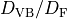

Configuration¶
AMP2 uses YAML style configuration file. All configurations for AMP2 can be controlled in “config.yaml”. The default setting parameters are provided in config_def.yaml in source directory.
The commands for configuration are listed below.
Directory¶
All tags in directory define the path of directories used in AMP2. If there is no directory in the path for Output, Done and ERROR, AMP2 makes new directories.
- Submit:
submit tag should be set to be the path for target materials. In AMP2, user can designate a specific material or a bunch of materials as target materials. To perform the AMP2 for a specific materials, submit path is set to be the structure file or the directory for continuous calculation. The valid formats for structure file are explained in /Input_and_Output/Input_files. For calculating a bunch of materials, Submit path is set to be the directory where the valid strcture format files and directories for continuous calculation are placed.
Usage:
directory: submit: [path of structure file] | [path of directory]Default:
directory: submit: ./Submit
- Output:
Output tag defines the path where the material on calculation is located.
Usage:
directory: output: [path of directory]Default:
directory: output: ./Output
- Done:
Done tag defines the path where calculated materials are saved.
Usage:
directory: done: [path of directory]Default:
directory: done: ./Done
- Error:
Output tag defines the path saving the materials in which calculation error broke out.
Usage:
directory: error: [path of directory]Default:
directory: error: ./ERROR
- src_path:
src_path tag should be set to be the directory for AMP2 source codes.
Usage:
directory: src_path: [path of directory]Default:
directory: src_path: ./src
- pot_path_GGA (pot_path_LDA):
pot_path_GGA (pot_path_LDA) should be set to be the directory for pseudopotential provided by VASP.
Usage:
directory: pot_path_GGA: [path of directory] pot_path_LDA: [path of directory]Default:
directory: pot_path_GGA: ./pot/PBE pot_path_LDA: ./pot/LDA
Program¶
The all tags in program determine the path of executable files except mpi_command.
- vasp_std:
vasp_std tag should be set to be the path for standard version of VASP.
Usage:
Program: vasp_std: [path]Default:
Program: vasp_std: ./vasp_std
- vasp_gam:
vasp_gam tag should be set to be the path for gamma only version of VASP.
Usage:
Program: vasp_gam: [path]Default:
Program: vasp_gam: ./vasp_gam
- vasp_ncl:
vasp_ncl tag should be set to be the path for non-collinear version of VASP. Though wrong path is set, most of calculations except spin-orbit coupling calculation can be conducted.
Usage:
Program: vasp_ncl: [path]Default:
Program: vasp_ncl: ./vasp_ncl
- gnuplot:
gnuplot tag should be set to be the path for gnuplot. Though wrong path is set, most of calculations except drawing images can be conducted.
Usage:
Program: gnuplot: [path]Default:
Program: gnuplot: /usr/local/bin/gnuplot
- mpi_command:
mpi_command tag should be set to be the operation command to conduct parallel computing calculation. The predefined commands are ’mpirun’, ’jsrun’, ’srun’, ’mpiexec’, ’mpiexec.hydra’, ’mpich’. Except for the predefined commands, the command should include a flag to specify the number of processors like ’mpirun -np’.
Usage:
Program: mpi_command: [command]Default:
Program: mpi_command: mpirun
Calculation¶
The all tags in calculation determine whether the calculation is performed or not.
- magnetic_ordering:
magnetic_ordering tag determines whether to identify the most stable magnetic spin ordering or not.
Usage:
Calculation: magnetic_ordering: True | FalseDefault:
Calculation: magnetic_ordering: True
- band:
band tag determines whether to estimate the band gap and to draw band structure or not.
Usage:
Calculation: band: True | FalseDefault:
Calculation: band: True
- density_of_states:
density_of_states tag determines whether to estimate the density of states or not.
Usage:
Calculation: density_of_states: True | FalseDefault:
Calculation: density_of_states: True
- hse_oneshot:
hse_oneshot tag determines whether to perform the hybrid calculation or not. This hybrid calculation is conducted without full band searching and structure optimization. For hybrid calculation band calculation must be conducted.
Usage:
Calculation: hse_oneshot: True | FalseDefault:
Calculation: hse_oneshot: True
- dielectric:
dielectric tag determines whether to estimate the dielectric constant or not. Dielectric constant is unphysical in metallic system. Thus, band structure calculation must be conducted to check whether it is metal or not.
Usage:
Calculation: dielectric: True | FalseDefault:
Calculation: dielectric: True
- effective_mass:
effective_mass tag determines whether to estimate the hole (and/or electron) effective mass or not. For effective mass calculation band calculation must be conducted.
Usage:
Calculation: effective_mass: True | FalseDefault:
Calculation: effective_mass: True
- potential_type
potential_type tag determines the functional scheme (LDA or GGA) for convergence test. Only one of them should be chosen.
Usage:
Calculation: potential_type: GGA | LDADefault:
Calculation: potential_type: GGA
Vasp_parallel¶
npar and kpar tags are used to enhance the efficiency of parallel computing calculation of VASP.
- npar:
napr tag determines the number of bands that are treated in parallel. It is same to NPAR tag in VASP.
Usage:
vasp_parallel: npar: [integer]Default:
vasp_parallel: npar: 2
- kpar:
kpar tag determines the number of kpoints that are treated in parallel. It is same to KPAR tag in VASP.
Usage:
vasp_parallel: kpar: [integer]Default:
vasp_parallel: kpar: 2
cif2vasp¶
In AMP2, input files for VASP calculation are automatically generated from structure files. These parameters can control the initial input files for VASP.
- pot_name:
pot_name tag determines the pseudopotential potential for element. By default, the potential file (POTCAR) is built using the preset pseudopotential. (Preset pseudopotential: Default potential)
Usage:
cif2vasp: pot_name: GGA: [element name]: [type of pseudopotential] LDA: [element name]: [type of pseudopotential]
- soc_target:
soc_target tag determines the elements to carry out spin-orbit coupling calculation. In AMP2, spin-orbit coupling calculation is performed only for band structure and density of states.
Usage:
cif2vasp: soc_target: - [element name] - BiDefault:
cif2vasp: soc_target:
- u_value:
u_value tag controls
values for PBE + Hubbard
Usage:
cif2vasp: u_value: - [element name]: realDefault:
cif2vasp: u_value: V: 3.1 Cr: 3.5 Mn: 4 Fe: 4 Co: 3.3 Ni: 6.4 Cu: 4 Zn: 7.5
Hybrid_oneshot¶
Conventional density functional theory calculation like LDA and PBE underestimates band gap and somtimes it gives wrong results for small gap materials such as Ge and InAs. Thus, AMP2 performs hybrid calculation for accurate band gap. In the previous study, it is shown that accurate band gap can be obtained using extremum points (valence band maximum and conduction band minimum) and optimized structure in PBE scheme. Since hybrid calculation demands high computational cost, this approach is imposed in AMP2.
For the small gap materials with metallic band structure in PBE functionals, DOS (density of states) based correction scheme is applied in AMP2. (See small gap correction)
Finally, AMP2 provides a method to select mixing parameter using permittivity since there is an inverse correlation between mixing parameter and permittivity.
- alpha:
alpha tag determines a mixing parameter for hybrid calculation. As we mentioned above, mixing parameter in PBE0 has a inverse correlation with permittivity. If alpha: auto is used, the mixing parameter is determined as one of permittivity.
Usage:
hybrid_oneshot: alpha: [real] | AutoDefault:
hybrid_oneshot: alpha: 0.25
- cutoff_df_dvb:
cutoff_df_dvb tag controls  used to classify semiconductor candidates.
Usage:
hybrid_oneshot: cutoff_df_dvb: [real]Default:
hybrid_oneshot: cutoff_df_dvb: 0.3
- band_structure_correction:
band_structure_correction determines whether to conduct scissor-correction for band structure or not.
Usage:
hybrid_oneshot: band_structure_correction: True | FalseDefault:
hybrid_oneshot: band_structure_correction: True
Effective_mass¶
In AMP2, effective mass tensor is estimated using semiclassical transport theory. The details are explained in the paper.
- carrier_type:
carrier_type tag determines the type of carrier (hole or electron) to be estimated.
Usage:
effective_mass: carrier_type: - hole | electronDefault:
effective_mass: carrier_type: - hole - electron
- temperature_for_fermi:
It controls the temperature to estimate the hole or electron distribution based on the Fermi-Dirac function.
Usage:
effective_mass: temperature_for_fermi: [real]Default:
effective_mass: temperature_for_fermi: 300